Agent-centric-real-to-sim · 归档于 2026-11-07
CoDimRecon
CoDimRecon: Agentic Reconstruction of Sim-Ready 3D Scenes with Deformable Curves, Surfaces, and Volumes
归档到 Agent-centric real-to-sim：agent 从多视角 RGB 重建含可变形物体（曲线、曲面、体积）的可仿真场景；第二相关 Sim-robot-learning（IPC 里的 rod / shell / solid 仿真）。项目页写着 Code "Soon"，读的时候还没有代码。
TL;DR
- Problem
- 已有的 sim-ready 场景重建只出刚体；电话线、塑料袋、椅垫要的几何形式（中心线 + 半径、带厚度的壳、水密实体）和材料模型都不一样，而且光看静态几何定不下来。
- Idea
- 一个 GPT-6 Astra agent 借 VGGT-Omega 几何和 SAM3D 参考 mesh，在 Blender 里用 primitives 重建刚体和关节；可变形物体按维度分 session 重建，用仿真器 skill 初始化 IPC 物理模型，再用预设的仿真机器人测试按固定顺序归因修改，材料模型最后才动。
- Result
- 6 个场景上 CD 最低、NC 最高（ScanNet++ CD 21.66 vs GPT-6 Astra 22.73，Table 3），Replica Stable(All) 97.54% vs HoloScene* 49.41%；Franka 在 IPC 里把听筒抬起 197.8 mm，半径 1.3 mm 的电话线随之拉开、通过全部检查（App B.4）；纸改成塑性铰后折痕保留 92.5% vs 3.7%（Table 4）。可变形物体只有演示，没有和真实几何的误差。
Problem
已有方法把每个物体都当刚体：一根卷曲电话线既没有可仿真的形式，也没有合适的材料模型
Running example · 后面每个 stage 都跟着它走
办公室里的卷曲电话线（Fig. 1 的 Telephone Cord、Fig. 2(c) 的 Curves 行）。输入是这间办公室的多视角 RGB，没有深度。场景看起来是 ScanNet++ 67d702f2e8，项目页叫 Scene 067-D；这是我的推断，论文没说 Fig. 1 用的是哪个场景。评测时这个场景渲染了 186 帧，分辨率 876×584（App C.1）。桌上一部电话，听筒和机身之间连着一根卷曲电话线。
→ 想要：一个可编辑、可仿真的办公室。家具是紧凑的刚体；抽屉和电话按键带关节；电话线是 centerline + 半径 的 rod。Franka 抓起听筒时，线被拉开，而且不穿模。
flowchart LR IN["例子输入
办公室多视角 RGB
电话 + 卷曲电话线"]:::example IN --> A1["HoloScene*
逐物体优化 SDF
只出刚体"] A1 --> AX["电话线没有可仿真形式
Deformable ✗
CD 27.15"]:::gap IN --> B1["ReplicateAnyScene
VLM + SAM3 分割
生成 mesh 直接当资产"] B1 --> BX["刚体 mesh，几何粗
Deformable ✗
CD 50.73 · F1 19.08"]:::gap IN --> C1["GPT-6 Astra 直接建
同一 backbone
只看 RGB 写 Blender"] C1 --> CX["线最多是静态几何
Deformable ✗
CD 22.73 · NC 70.14"]:::gap IN --> D1["一个 session 全管
本文消融 Fig. 7
三类指令合在一起"] D1 --> DX["线缆塌成同心圆环
粗、不可信
只有定性图"]:::gap
数字是 ScanNet++ 三个场景的均值（Table 3），论文没有电话线这个物体自己的分数。"坏在哪"有推断成分。论文只给了两条依据：这三个 baseline 都不输出可仿真的可变形资产（Table 1 的 Deformable Simulation 列、§4.2）；直接让 agent 从图像建，会出现尺度和布局错误、形状过粗（§3.1 的预实验）。第 4 条是本文自己的消融（§4.3、E5），只有一张定性图。
根本问题：可仿真的形式取决于物体的维度：线缆要 centerline + 半径，薄片要中面 + 厚度，软体要水密实体。材料模型光看静态几何也定不下来。 这篇的切入点：agent 按维度分 session 重建可变形物体，用仿真器自带的示例 skill 初始化物理模型，再在仿真里让机器人做预设测试，暴露问题后按固定顺序归因修改，材料模型最后才动。
Related work
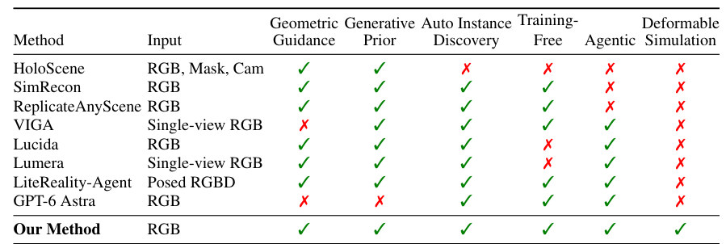
| 相关工作 | 解决什么 | 怎么解决 | 和本文的区别 |
|---|---|---|---|
| 同一问题 · 别的解法 | |||
| 优化式组合重建 HoloScene（baseline）、ObjectSDF++、PhyRecon 等 | 多视角 → 逐物体的 sim-ready 场景 | 用掩码、相机，逐物体优化 SDF 并加物理约束 | 要掩码和相机、要优化、只有刚体 → 本文免训练，agent 用 primitives 重建，并加入可变形物体 |
| 零样本模块拼装 ReplicateAnyScene（baseline）、SimRecon | 视频 → 组合式 3D 场景 | 预训练分割 + 3D 生成器，生成 mesh 就是最终资产 | 生成 mesh 直接用、不可编辑 → 本文只把 SAM3D mesh 当参考，重建成可编辑 primitives |
| Agentic 场景创作（本文所属） GPT-6 Astra（baseline）、Lucida、Lumera、LiteReality-Agent、VIGA | agent 从观测写出场景 | agent 调 3D 工具搭场景，迭代检查 | 要微调或 RL（Lucida、Lumera）、要 RGB-D 和 RoomPlan（LiteReality）、只看单图（VIGA）、没有参考（Astra），且都只有刚体 → 本文 RGB、免训练、带几何和生成参考，还出可变形资产 |
| 相似做法 · 别的问题 | |||
| 余维度仿真 Discrete elastic rods、discrete shells、IPC / C-IPC、弹塑性模型 | 把 rod、shell、solid 及其接触仿真准 | 降维表示 + 无穿透接触 + 塑性等本构 | 假设几何和材料已经给好 → 本文从图像重建出这些求解器要的输入 |
| 物理参数整定 Zhang et al. 2025（真机 rollout 标定软体）、GS-Agent（agent 调材料） | 让软体参数对上真实或目标行为 | 用真机交互或文本目标做反馈来调参数 | 依赖真实动态或文本目标 → 本文只用预设的仿真测试，参数是"有效值"，不是实测 |
来源：论文 §1、§2 Related Work（含 Table 1）、§3.3 和 App A（余维度仿真）、§3.3 对 Zhang et al. 2025 的那句对比；未另行检索。§2 还讨论了单图组合重建（Gen3DSR、SceneMaker、φ-Scene、REST3D 等）和文本生成场景（SceneSmith、SAGE、PAT3D 等），它们的输入不同，这里没有单列。
Level 1 · Big picture
agent 先借几何和生成参考，把整个场景搭成可编辑的刚体；再把可变形物体按维度单独重建，放进 IPC 仿真里让机器人测一遍
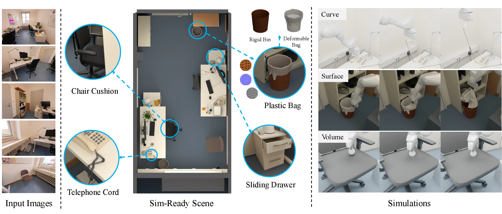
怎么读这张图
- 左 "Input Images"：办公室的 5 张输入视角。输入只有 RGB，相机、深度都要自己估。
- 中 "Sim-Ready Scene"：重建结果的俯视图，四个蓝圈放大了四个物体：Chair Cushion（volume）、Telephone Cord（curve，就是我们的例子）、Plastic Bag（surface）、Sliding Drawer（带 prismatic 关节的刚体）。
- 中上 "Rigid Bin" / "Deformable Bag"：垃圾桶和桶里的塑料袋拆成两个物体，一个刚体，一个可变形。
- 右 "Simulations"：Curve 行是 Franka 抓起听筒、电话线被拉长（例子的最后一步）；Surface 行是把塑料袋从桶里拉出来；Volume 行是用圆头工具压椅垫。
flowchart LR I["Input
办公室多视角 RGB"]:::example --> M["Agent 按维度重建
电话线 → rod"] M --> O["Output
听筒抬起 197.8 mm
检查全部通过"]:::win
Level 2 · Stages
5 个 stage：前两个搭刚体场景，后三个处理可变形物体
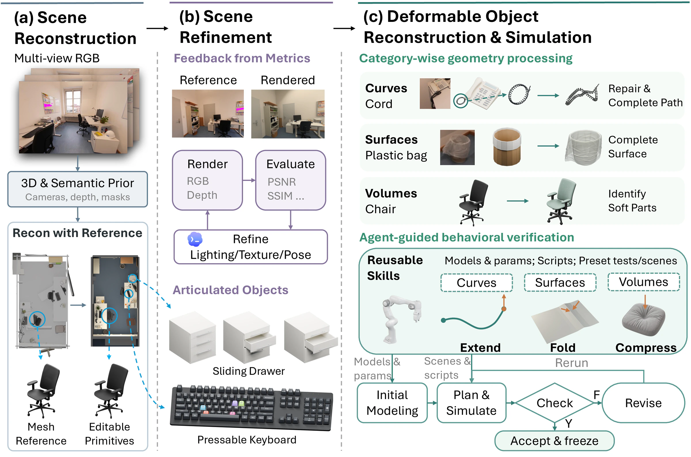
怎么读这张图
- (a) "Scene Reconstruction"："Multi-view RGB" → "3D & Semantic Prior（Cameras, depth, masks）" → "Recon with Reference"。左边灰色的是生成的参考场景，右边是 agent 用 primitives 重建的场景；底下椅子从 "Mesh Reference" 变成 "Editable Primitives"。这是 Stage 1。
- (b) "Scene Refinement"："Feedback from Metrics" 一栏对比 Reference 和 Rendered；循环是 "Render（RGB, Depth）→ Evaluate（PSNR, SSIM …）→ Refine Lighting/Texture/Pose"。"Articulated Objects" 给了 Sliding Drawer 和 Pressable Keyboard。这是 Stage 2。
- (c) 上半 "Category-wise geometry processing"：三行分别是 Curves / Cord（"Repair & Complete Path"）、Surfaces / Plastic bag（"Complete Surface"）、Volumes / Chair（"Identify Soft Parts"）。这是 Stage 3。
- (c) 下半 "Agent-guided behavioral verification"："Reusable Skills（Models & params; Scripts; Preset tests/scenes）"给三类各一个测试：Curves Extend、Surfaces Fold、Volumes Compress。底部循环是 "Initial Modeling → Plan & Simulate → Check"，F 走 "Revise" 再 "Rerun"，Y 走 "Accept & freeze"。这是 Stage 4 和 Stage 5。
flowchart TD IN["Input
办公室多视角 RGB"]:::example --> S1 S1["1 · 带参考的重建
电话和桌子成 primitives"] --> S2["2 · 场景精修
电话按键有关节"] S2 --> S3["3 · 按维度重建
线 → centerline
r = 1.3 mm"]:::win S3 --> S4["4 · 物理模型 + 静止形
IPC elastic rod"]:::win S4 --> S5["5 · 行为测试
抬听筒 197.8 mm"]:::win S5 -->|失败：按顺序归因| S4 click S1 href "#stage-1" click S2 href "#stage-2" click S3 href "#stage-3" click S4 href "#stage-4" click S5 href "#stage-5"
点击 stage 展开 Level 3 细节。Stage 5 失败时，修改可以落在动作（Stage 5 本身）、几何（Stage 3）或数值、材料（Stage 4），见 Stage 5。
Level 3 · Details
每个 stage 的细节
Stage 1 Reconstruction with Geometric and Generative References 多视角 RGB → Blender 里可编辑的刚体场景（primitives）
- Why：预实验里，agent 直接从图像建场景有三个反复出现的问题：尺度和布局错、可见细节被粗略近似、很少主动用外部 3D 工具（§3.1）。所以把几何和生成参考变成固定流程的输入。
- 几何参考：VGGT-Omega 从 RGB 估出相机内参、相机到世界的位姿、深度图和点图；agent 估物体尺寸、位姿，或者拿渲染和观测比时，都查这份共享的公制几何。
- 实例：CropFormer 逐帧出实体掩码；按 MaskClustering 反投影、跨视角按 3D 重叠聚类成 3D track，再用 InstaScene 的欠分割过滤。
- 生成参考：每个 track 选一个视角给 SAM3D 生成 mesh。选的不是 2D 掩码最大的视角，而是掩码像素用点图抬到 3D 后表面积最大的视角，因为大掩码可能只是一个只拍到局部的近景（App B.1 式 1）。
- 位姿对齐：在选中视角前后 ±r 帧里，渲染 mesh，用 MASt3R 找观测和渲染的稠密对应，抬成 3D 点对，用 Umeyama 求尺度、旋转、平移的增量；重复 K 轮，留平均掩码 IoU 最高的那次（App B.1 式 2–5）。
- 小物体：容器里漏掉的小物体，agent 先认出容器，查对应图像区域，拿可见内容的掩码，再用 REST3D（内部调 SAM3D）补回去（App B.3）。
- 重建：agent 把参考场景载入 Blender，删掉多余或错的物体，用几何上下文修房间外壳；家具和规则刚体用 primitives 加 bevel、subdivision、lattice modifier 重建，生成 mesh 只当形状参考。可变形物体不走这一步，交给 Stage 3。
- 紧凑程度：一把办公椅，SAM3D 参考有 178,172 个顶点；agent 重建用了 43 个 primitives（22 个立方体、18 个圆柱、3 个锥台），2,192 个顶点，顶点减到 1/81，面减到 1/301，文件从 22.9 MiB 降到 610 KiB；和参考比，轮廓 IoU 81.1–93.7%（五个正交视角，App B.2）。注意比的是生成参考，不是真椅子。
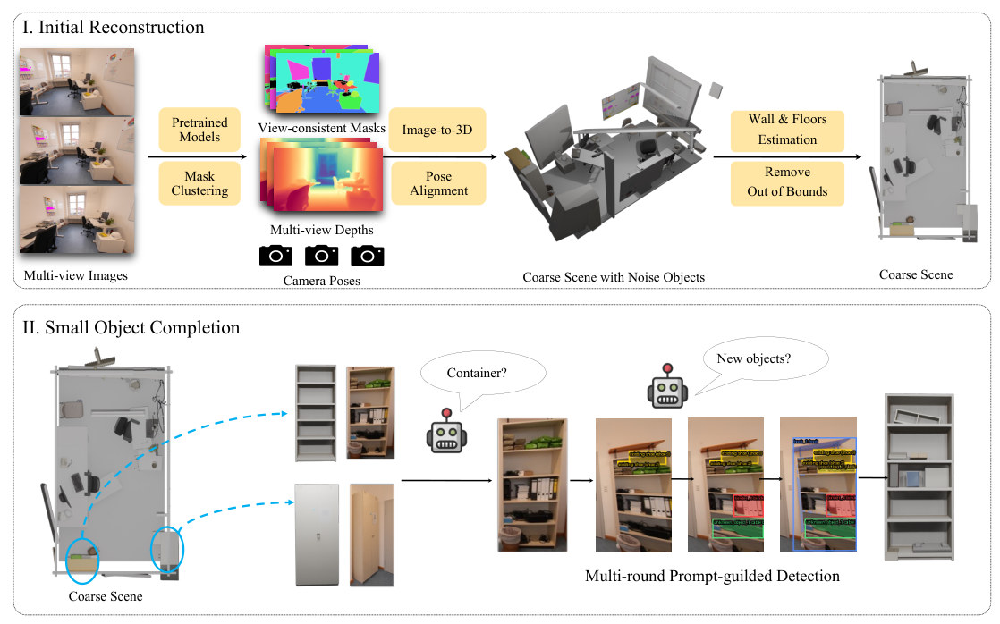
怎么读这张图
- "I. Initial Reconstruction"："Multi-view Images" → "Pretrained Models" + "Mask Clustering" 得到 "View-consistent Masks"、"Multi-view Depths"、"Camera Poses" → "Image-to-3D" + "Pose Alignment" 得到 "Coarse Scene with Noise Objects"（物体散落、有噪声）→ "Wall & Floors Estimation" + "Remove Out of Bounds" → "Coarse Scene"。
- "II. Small Object Completion"：粗场景里两个蓝圈（书架、柜子）被认成 "Container?"；agent 对书架照片做 "Multi-round Prompt-guilded Detection"（原图拼写），每轮问 "New objects?"，框出新的物体，最后填满书架。
flowchart TD a["RGB 帧
办公室多视角"] --> b["VGGT-Omega
相机 · 深度 · 点图"] a --> c["CropFormer 掩码
聚成 3D track"] c --> d["SAM3D 参考 mesh
选 3D 面积最大的视角"] b --> e["MASt3R + Umeyama
K 轮，取 IoU 最高"] d --> e e --> f["Agent 在 Blender
电话、桌子成 primitives"]
Running example 在这一步
186 帧 → VGGT-Omega 给出相机和深度，电话、桌子的公制尺寸由它定；电话有自己的 3D track 和 SAM3D 参考 mesh，agent 在 Blender 里把电话机身重建成 primitives。Fig. 2(c) 的 Curves 行里，电话线是从电话参考 mesh 上圈出来的（"Cord" 照片 → 电话 mesh 上的蓝圈 → 一个圆环），我读成线的初始形状来自这个参考 mesh；这是看图的推断，正文没写。
Stage 2 Scene Refinement primitive 场景 → 外观对齐、带关节、在重力下站稳的刚体场景
- Why：agent 搭的场景灯光、外观和观测不一样，小的位姿误差会让物体悬空或互相穿插，后面仿真会不稳（§3.2）。
- Render–evaluate–refine：在输入视角渲染、和参考图比；用二次颜色对齐做诊断，用迭代加权最小二乘逐通道拟合下面的映射。
- 怎么用这个诊断：对齐后指标提升大，说明主要是灯光或材质不对；提升小，说明该看几何或位姿。agent 改对应部分，再评估输入视角。不把 3DGS 外观烘到 mesh 上，因为那会把光照混进反照率，到仿真光照下就不一致。
- 关节：给 agent 一份关节建模指南，覆盖 revolute、prismatic、screw、cylindrical、universal、spherical；agent 把能独立动的刚体部件拆开，连小部件也拆，比如键盘按键、电话按键。
- 刚体稳定：整个场景导入 MuJoCo，所有物体先当刚体，在重力下 settle，把结果位姿写回作为标准摆放。可变形物体在 Stage 3–5 单独处理。
符号表（颜色对齐 c′ = a c² + b c + d）
| 符号 | 白话 | 例子里 |
|---|---|---|
| c | 渲染图里一个像素在某个颜色通道上的值 | 办公室渲染图的像素 |
| c′ | 映射后的值，拿去和参考照片的同一像素比 | 同一位置的照片像素 |
| a、b、d | 每个通道各拟合一组的三个系数 | 论文没给具体数值 |
flowchart TD r["Render 输入视角
RGB + 深度"] --> q["二次颜色对齐
看指标提升多少"] q -->|提升大| l["改灯光或材质"] q -->|提升小| g["改几何或位姿"] l --> j["拆关节
电话按键、抽屉"] g --> j j --> m["MuJoCo 重力 settle
位姿写回 Blender"]
Running example 在这一步
办公室在输入视角下渲染、对齐颜色、改灯光和位姿；抽屉拿到 prismatic 关节（Fig. 1 的 Sliding Drawer），电话按键被拆成能按的部件（§3.2 点名了电话按键）；电话和桌子在 MuJoCo 里 settle 后不再悬空。电话线此时还没有物理模型。
Stage 3 Category-wise Deformable Reconstruction 可变形物体的参考几何 → 求解器能用的 curve / surface / volume
- Why：仿真要的几何必须和离散化对上。细的线、薄的片如果当普通 3D 实体，需要很细的厚度方向网格，低阶单元还会 locking；所以 rod 用曲线，shell 用曲面（§1、App A）。这改变了重建目标本身。
- 三类各修什么（§3.3）：curve（线缆）要补全路径、估计半径；surface（衣物、纸）要补洞、把碎片合成一个流形壳，再给厚度；volume（坐垫）要闭合成水密实体，好做四面体网格。
- 分开 session：三类各在一个独立的 agent session 里做，各拿自己类别的指令。合成一个 session 时，线缆几何更粗、更不可信（Fig. 7，E5）。
- volume 的特殊处理：高面数的 volume 先做一个闭合的低面数代理，把细 mesh 绑上去，四面体化代理（§3.3 Rest Shape）。
曲线从图像到 centerline + 半径：论文写了什么、没写什么
- 写了：curve 的修补是 "path completion and radius estimation"（§3.3）；目标是 "a continuous centerline and radius"（§1）；Fig. 2(c) 画的是 照片 → 电话参考 mesh 上的线 → 圆环 → "Repair & Complete Path"。电话线最后的结果是 3,200 个节点、总长 1.694 m 的 centerline（App B.4），半径 1.3 mm（Table 2）。
- 没写：用什么模型或算法提中心线（没有骨架化、曲线拟合、2D 曲线跟踪的描述）；半径怎么估、和真线差多少；被遮挡的段、自身交叉处怎么补；curve session 的指令原文（附录只给了 GPT-6 Astra baseline 的 prompt）。
- 能确定的输入：§3.1 把 VGGT-Omega 几何、CropFormer 的 3D track、SAM3D 参考 mesh 定为固定流程的输入，curve session 应能用到它们；具体怎么用于电话线，论文没说（推断）。
- agent 怎么决定：物体归哪一类、由谁判断，论文没写。归类能改：椅垫靠背碎片在重力下掉落、求解不收敛后，agent 把它 "Volume re-classified"，并把整个座垫底面粘住（Table 6）。
- 交叉的证据：重建出来的线圈自己穿插：有 15,755 对不相邻的线段胶囊互相重叠，最多重叠 2.48 mm；Stage 4 必须重采样才能进 IPC（App B.4）。
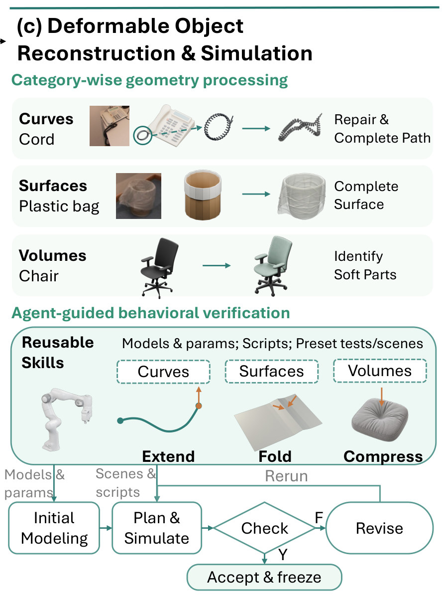
flowchart TD k["按维度分 session
各拿各的指令"] --> c["Curve
补路径 + 估半径"] k --> s["Surface
补洞 + 合碎片"] k --> v["Volume
闭合成水密实体"] c --> c2["centerline + r
3,200 节点 · 1.694 m
r = 1.3 mm"]:::example s --> s2["流形壳 + 厚度
纸 0.105 mm"] v --> v2["四面体网格
椅垫、豆袋"]
Running example 在这一步
电话线进 curve session：从参考里的那个圆环补全路径、估半径，得到 3,200 个节点、1.694 m 长的 centerline，半径 1.3 mm（直径 2.6 mm）。这根线自己有大量穿插，留给 Stage 4 处理。
Stage 4 Physical Modeling from Simulator Skills + Rest Shape curve / surface / volume → IPC 里的初始物理模型、参数和静止形
- Why：重建出的几何定不下材料和接触属性（§3.3）。
- 后端：IPC 系的接触（Li et al. 2020）；App B.4 写的具体求解器是 QIPC（beanbag 一节写了版本 v0.0.1.dev895）。Stage 2 的刚体 settle 用的是 MuJoCo，两者不同。
- Reusable simulator skills：每个 skill 打包了可用的本构模型、能直接跑的示例场景、脚本和候选初始参数。
- 谁定什么：几何维度定离散化：curve 用 rod，surface 用 shell，volume 用实体有限元。agent 选适合这个物体的材料模型，并改写最接近的示例配置。
- 参数怎么来：不是拟合出来的，也不是 VLM 看图估的。参数取自 skill 的示例，只在行为测试暴露问题时修改；Table 2 标注为"有效仿真参数，不是实测材料属性"。
- 每次试验的场景（App B.4）：IPC 要无穿透的输入，所以只放交互需要的几何：一台固定底座的 Franka（7 个转动关节、2 个滑动手指，用 affine body dynamics）；目标可变形物体和与它相连的刚体（如听筒和电话机身）；场景其余部分合成一个固定的碰撞环境。重力 9.81 m/s²，电话线、椅垫、豆袋的 dt = 0.01 s。
- 静止形：重建出的几何不一定在重力下平衡，所以交互前先 settle。curve 和 surface 直接导入；settle 变形太大，就回去改几何。settle 后的形状写回 Blender，同时保留仿真参数和可编辑资产。
各类物体用什么模型
| 物体 | 维度 | 模型 | 参数来源 |
|---|---|---|---|
| 电话线 | curve | QIPC 自带的 discrete elastic rod with twist（Bergou 2008） | 仿真器已有的电话示例，作为"看起来合理"的先验，没对真线标定 |
| 纸 | surface | 各向同性 StVK membrane + hinge bending，塑性铰 | 塑性是行为测试后加的（Stage 5） |
| 塑料袋 | surface | 离散薄壳，StVK 面内弹性 + hinge bending | 仿真设置，没对真袋标定 |
| 椅垫 | volume | StVK–Hencky 实体，无粘性泡沫模型 | Hencky 和 E = 30 kPa 来自之前的椅垫测试（Table 6） |
| 豆袋 | volume | stable Neo-Hookean 实体 | Table 2 |
| 垃圾桶、听筒、Franka | 刚体 | affine body（ABD） | 垃圾桶是固定的 affine body，密度 700 kg/m³；听筒 0.2 kg、机身 0.55 kg，可动 |
表是我按 §3.3、Table 2、App B.4 的文字整理的。
符号表（Table 2 的列）
| 符号 | 白话 | 电话线的值 |
|---|---|---|
| ρ | 密度 | 1600 kg/m³ |
| E | 杨氏模量，即材料有多硬；电话线的拉伸、弯曲、扭转模量都用这个值 | 40 MPa |
| ν | 泊松比：拉长时横向缩多少 | 0.35 |
| r / h | 线的半径，或者壳的厚度 | r = 1.3 mm |
| κY | 塑性铰的屈服曲率：弯过这个程度就留下永久折痕 | 不适用（只有纸有：25 m⁻¹） |
| δ | 接触激活距离：两个表面近于这个距离，IPC 的排斥屏障就开始起作用 | 0.15 mm |
| μ | 摩擦系数 | 0.60 |
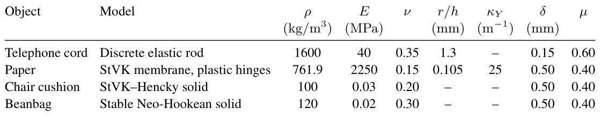
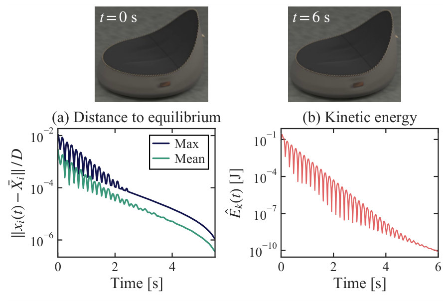
- 怎么读 Fig. 9：(a) 的 "Max" 和 "Mean" 两条线都一路下降，2.3 s 后最大值低于 10⁻⁴ D；(b) 的动能从峰值 0.26 J 降到 6 s 时的 8.5 × 10⁻¹¹ J。初始几何和平衡最多差 1.1% D，没有四面体翻转（最小单元 Jacobian 大于 0.91），体积变化小于 0.75%（App B.4）。
flowchart TD g["centerline + r
15,755 对重叠"] --> sk["Rod skill
示例场景 + 参数"] sk --> rs["重采样
576 段 · 1.664 m
偏差 ≤ 0.422 mm"] rs --> at["两端接到刚体
听筒 0.2 kg · 机身 0.55 kg"] at --> st["重力 settle
写回 Blender"]
Running example 在这一步
- 选模型：维度是 curve，所以用 QIPC 的 discrete elastic rod with twist，从重建的 centerline 和半径初始化；用 Bishop frame 初始化方向，扭转随动态演化。
- 参数：拉伸、弯曲、扭转模量都是 40 MPa，ρ = 1600 kg/m³，r = 1.3 mm，线重约 14 g；这些取自仿真器已有的电话示例。
- 去掉自穿插：原 centerline 有 15,755 对重叠，最多 2.48 mm。agent 拟合了一条 576 段的折线，每段都比线的直径长至少 1 μm；段长 2.60–3.49 mm（平均 2.89 mm），总长 1.664 m，离原曲线最远 0.422 mm。
- 两端：最外面的三条边做成应力释放引线，接到听筒或机身上：在刚体坐标系里位置和切向固定，轴向扭转自由。
- 静止形：线圈本身是无应力自然形；在重力下 settle 后的形状写回 Blender。所以存下来的静止形是重力下的平衡形，不是无应力形（App B.4）。
Stage 5 Agent-Guided Behavioral Verification 初始模型 → 通过预设机器人测试、冻结的资产（或按顺序修改后重跑）
- Why：示例参数只是初始化。资产能不能支持预期的交互，往往要在仿真里动起来才看得出（§1、§3.3）。
- 不用真机：agent 规划预设的诊断操作，不需要真机 rollout 来标定（§3.3 拿这点和 Zhang et al. 2025 对比）。
- 三个测试：抬起听筒拉开电话线（Extend）；在三个位置按压再松开椅垫（Compress）；折纸，松手后应保留折痕（Fold）。
- agent 定什么：抓取和接近位姿、夹爪开合、手臂运动；仿真器离线跑；agent 看渲染出的 rollout 和诊断报告。
- 检查：物理有效性，比如单元拉伸的上下界、单元翻转；外加任务级验收标准。
- 失败时按固定顺序归因：先查指令动作、工具、接触位置；再查几何和边界条件；然后查数值设置；还复现不了想要的行为，才改材料模型，改完对这个资产固定下来。
- 结果的含义：没有实测的真实动态，接受的值只是假设模型下的"有效参数"，不是恢复出的材料参数。
flowchart TD p["规划诊断操作
抓听筒、抬起"] --> sim["IPC 离线仿真
14 s · 1,401 states"] sim --> ck["Check
有效性 + 任务验收"] ck -->|Y| ok["Accept and freeze
两次重复都通过"]:::win ck -->|F| dg["按顺序归因
动作 → 几何
→ 数值 → 材料"] dg --> p
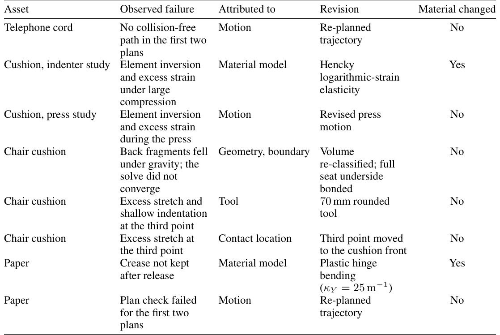
- 怎么读 Table 6：第一行就是例子：电话线 "No collision-free path in the first two plans"，归因 "Motion"，修改 "Re-planned trajectory"，材料没动。椅垫那几行能看到整个顺序：先改材料（Hencky），再改动作、几何和边界（"Volume re-classified"）、工具（70 mm 圆头）、接触位置。纸的 "Crease not kept after release" 才改成塑性铰（E3）。
Running example 在这一步
- 失败两次：agent 的前两个规划都找不到无碰撞的路径，归因到动作，重新规划轨迹（Table 6）。
- 时间线（14 s）：电话从桌面上方 10 mm 落下，settle 8 s；8.6–9.6 s 夹爪接近，10.3 s 前闭合，10.7–12.8 s 靠手指接触把听筒抬起，保持到 14 s；手指 PD 控制器限力 20 N。
- 验收标准：线段拉伸比保持在 [0.9, 1.1]；7.5–8 s 的 settle 漂移小于 1 mm、最大节点速度小于 2 mm/s；听筒升起并保持在起点上方至少 120 mm，持握滑移小于 5 mm，手指和表面的间隙小于 1 mm；刚体 affine 应变小于 10⁻³；机器人关节残差小于 0.1 mm。
- 结果：两次重复运行都通过，数字见 E2。
Recap：例子覆盖了论文的哪些 idea
| 论文里的 idea | 例子里在哪体现 |
|---|---|
| 几何参考（VGGT-Omega） | Stage 1：办公室的相机、深度给电话和桌子定公制尺寸 |
| 生成参考 + 位姿对齐（SAM3D、MASt3R、Umeyama） | Stage 1：电话的参考 mesh，Fig. 2(c) 里线也从这个 mesh 上圈出（看图推断） |
| Primitive 重建 | Stage 1：电话、桌子成 primitives；论文的定量例子是办公椅，43 个 primitives |
| 容器内小物体补全（REST3D） | Stage 1：同一办公室的书架（Fig. 8），不是电话线 |
| Render–evaluate–refine | Stage 2：办公室在输入视角对齐颜色、改灯光和位姿 |
| 关节建模 | Stage 2：抽屉 prismatic，电话按键 |
| MuJoCo 刚体稳定 | Stage 2：电话、桌子 settle 后写回 |
| 按维度分 session | Stage 3：电话线进 curve session，得到 centerline + 1.3 mm 半径 |
| Reusable simulator skills | Stage 4：rod 模型和参数取自仿真器的电话示例 |
| IPC 无穿透输入、静止形 | Stage 4：576 段重采样；重力下的平衡形写回 Blender |
| 行为测试 + 按顺序归因 | Stage 5：两次重新规划动作后，抬起 197.8 mm 通过 |
| 行为测试触发材料修改 | 电话线没触发。把例子延伸到同一流程里的另一张纸：回弹 → 塑性铰（E3） |
| 场景级主结果 | E1：例子所在的 ScanNet++ 场景计入 Table 3 的均值 |
Results
场景几何比 baseline 好一点、站得更稳；可变形物体只有能力演示，没有和真实几何、真实动态的对比
E1 比场景级几何、渲染和刚体稳定性 → E2 展示三类可变形物体在仿真里能被机器人操作 → E3 用折纸说明行为测试能发现材料模型错 → E4 消融几何参考、生成参考和渲染精修 → E5 消融"分 session"。全文没有成功率、运行时间和 token 开销。
E1场景级重建能不能比已有方法更准、更稳？§4.2 · Table 3 · Fig. 3
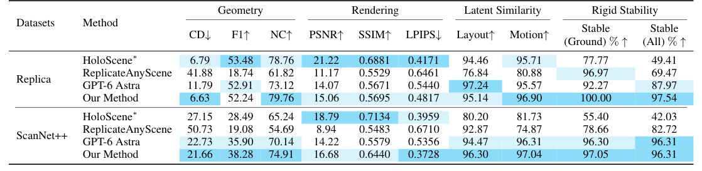
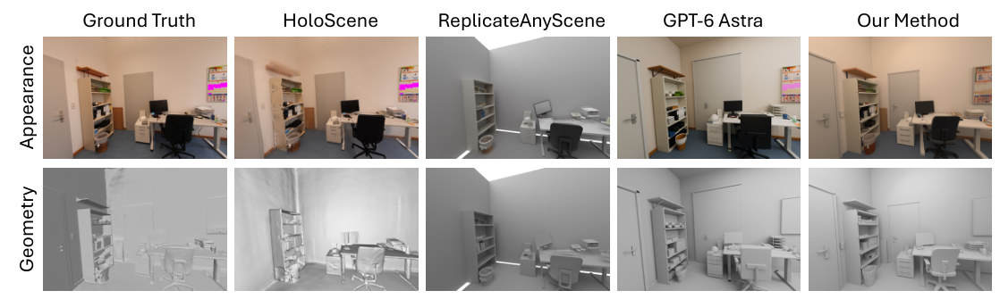
- 说明什么
- 几何误差更低、刚体更稳，但渲染不如 HoloScene*。CD：ScanNet++ 21.66 vs GPT-6 Astra 22.73、HoloScene* 27.15；Replica 6.63 vs HoloScene* 6.79。NC 两个数据集都最高（79.76、74.91）。Stable(All)：Replica 97.54 vs GPT-6 Astra 87.97、HoloScene* 49.41；ScanNet++ 96.31，和 GPT-6 Astra 并列。Replica 的 F1 52.24 排第三（HoloScene* 53.48、GPT-6 Astra 52.91）；PSNR、SSIM 两个数据集都排第二，HoloScene* 第一（如 Replica PSNR 21.22 vs 15.06）。
- 在故事里
- 证明加了可变形物体的同时，场景重建本身没有变差。论文自己说 Replica 上 CD 和 NC 的优势"modest"。
- 指标
- CD：50 万个按面积采样点的对称平均最近邻距离，单位 cm；F1@5 cm；NC：法向余弦。PSNR、SSIM、LPIPS 在重建用的同一批输入视角上算，测的是贴合观测，不是新视角合成。Layout、Motion：V-JEPA 2.1 特征空间里 64 对帧的相似度。Stable：在 MuJoCo 里每次只放开一个动态物体，3 s 后倾斜超过 30° 或位移超过 max(5 cm, 0.2 × 包围盒对角线) 算倒；Ground 只算落地物体，All 算全部（App C）。
- 怎么评测
- 3 个 Replica 和 3 个 ScanNet++ 场景，都来自 HoloScene 的发布版；ScanNet++ 的参考位姿是 SfM 估的。
- HoloScene* 是改过的配置：关掉法向监督，掩码用本文的聚类结果，相机和深度用 VGGT-Omega；论文明说这不代表 HoloScene 默认配置的表现。
- ReplicateAnyScene 的位姿对齐和关系推理模块没开源，作者自己重写并逐场景调参；分割用它默认的 VLM + SAM3。
- GPT-6 Astra 是同一个 backbone，reasoning effort xhigh，每个场景一个 prompt（App E），直接从 RGB 写 Blender。它在自己的坐标系里建，评测前要整体配准（偏航每 5° 搜一次、考虑镜像、粗到细带尺度的 ICP）；本文、HoloScene*、ReplicateAnyScene 共用 VGGT-Omega 相机，用 Umeyama + ICP 对齐。
- 没有报告多次运行或方差。稳定性测试里物体分类（背景、静态、动态）也由 GPT-6 Astra 给出。
E2重建出的 curve、surface、volume 能不能被机器人在仿真里操作？§4.2 · Fig. 4 · App B.4
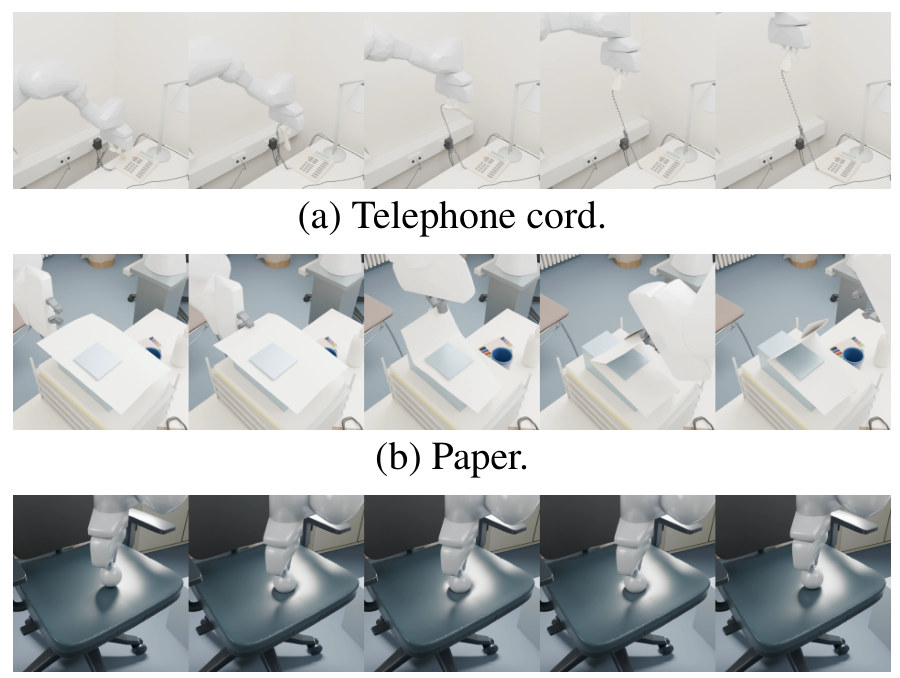
| 电话线测试的检查 | 验收阈值 | 两次重复的实测 |
|---|---|---|
| 线段拉伸比 | [0.9, 1.1] | [0.9985, 1.0463] / [0.9983, 1.0465] |
| 7.5–8 s settle 漂移 / 最大节点速度 | < 1 mm / < 2 mm/s | 0.773 mm / 1.6 mm/s |
| 听筒抬升 | ≥ 120 mm 并保持 | 峰值 197.8 / 197.7 mm |
| 持握滑移 | < 5 mm | 1.79 / 1.77 mm |
| 手指和表面的间隙 | < 1 mm | 最大 0.143 mm |
| 线自身最小间隙（不相邻段） | — | 两次都是 22.0 μm |
| 线和环境的最小间隙 | — | 0.126 / 0.110 mm |
| 每步 Newton 迭代 | 上限 100 | 都不超过 26 |
这张表是我按 App B.4 的正文整理的，论文没有这张表。最大拉伸约 1.046 出现在第一步：重采样后还有 127 对隔一段的胶囊落在接触激活距离内，最近只有 3.5 μm；第一步 IPC 的屏障把它们推开，把 88 段短段从 2.60–2.71 mm 拉到 2.72–2.74 mm，刚好低于 2r + δ = 2.75 mm。两次重复的线轨迹相差 0.665 mm RMS，局部最多 9.55 mm。
- 说明什么
- 三类可变形物体都能进 IPC，并被机器人操作而不失效。电话线两次运行都通过全部检查；椅垫最终凹陷 22.9、22.6、22.9 mm，要求峰值凹陷在 18–45 mm 内；塑料袋只给了仿真设置，没有数字。
- 在故事里
- 支撑"产出的可变形资产能用于 rod、shell、solid 仿真"这一条贡献。
- 指标
- 每个测试自己的物理有效性和任务验收标准（App B.4），通过或不通过。没有和真实几何、真实动态的误差。
- 怎么评测
- 论文说 baseline 都不输出可仿真的可变形资产，所以只做能力演示，没有跨方法的定量比较（§4.2）。
- 每个资产只测一种交互；电话线跑了两次重复。
- 参数是示例参数，没对真物体标定；仿真出的轨迹在 Blender 里回放渲染。
E3行为测试能不能发现数值检查发现不了的材料模型错误？§4.2 · Fig. 5 · Table 4
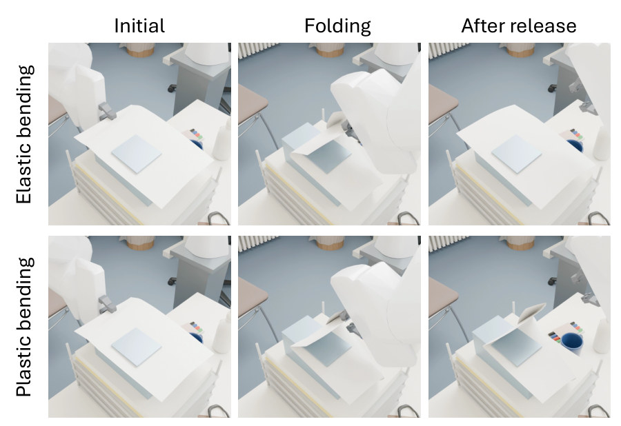
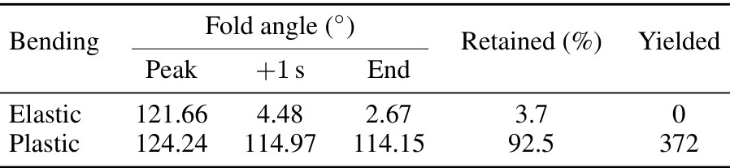
- 说明什么
- 两个 rollout 都通过了数值有效性检查，只有行为测试能分出谁对。开夹 1 s 后，弹性折角 4.48°、塑性 114.97°；保留率 3.7% vs 92.5%；屈服的铰 0 vs 372 个。
- 在故事里
- "材料模型在行为测试暴露问题时才修改"的唯一完整案例：第一次折纸通过了物理有效性检查，却松手回弹；agent 开启了塑性铰弯曲，κY = 25 m⁻¹，无硬化（Table 6）。
- 指标
- 折角是两块固定材料区域按面积加权的法向夹角，0° 表示平行，开头的 5.35° 偏移没有减掉；Retained = +1 s 折角 / 峰值折角；Yielded = 自然角变化超过 0.1 rad 的铰数。
- 怎么评测
- 同一条 140° 的夹爪轨迹，只切换弯曲塑性，其余参数不变；两次都存 1,051 个状态，间隔 0.01 s，7.2–7.7 s 松开夹爪。
- 弹性那次是加了塑性之后补跑的对照，不是原来失败的那次试验。
- 纸：ρ = 761.9 kg/m³（80 g/m²），E = 2.25 GPa，ν = 0.15，厚 0.105 mm，μ = 0.4。
E4几何参考、生成参考、渲染精修各起什么作用？§4.3 · Table 5 · Fig. 6
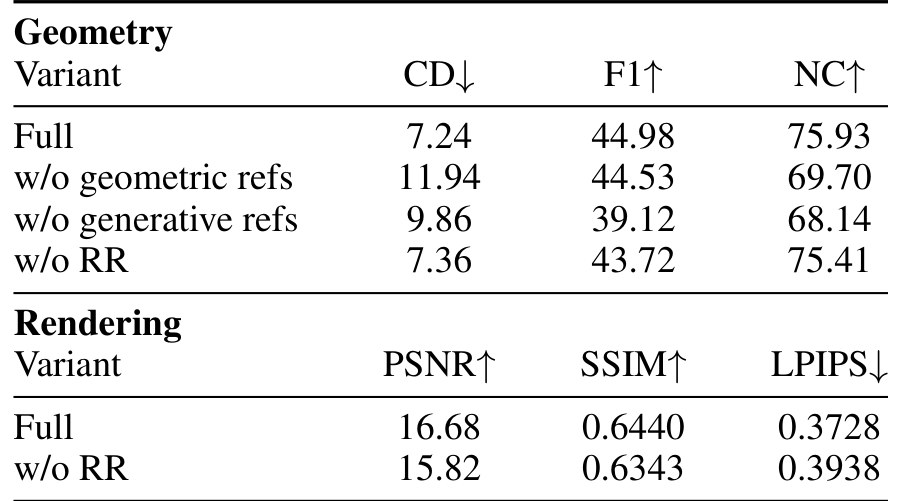
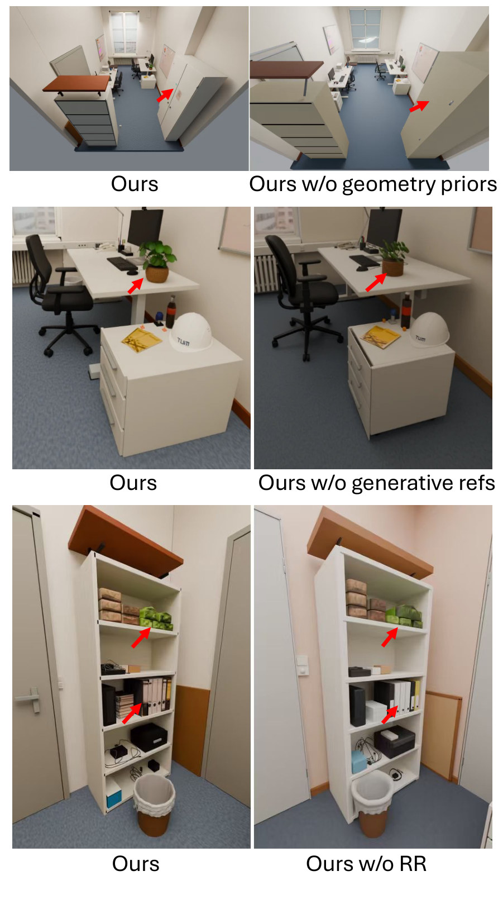
- 说明什么
- 几何参考管尺度和布局，生成参考管形状细节，渲染精修主要管外观。去掉几何参考，CD 从 7.24 到 11.94（+64.9%），NC −8.2%；去掉生成参考，F1 −13.0%、NC −10.3%；去掉渲染精修，PSNR −5.2%、SSIM −1.5%、LPIPS +5.6%，CD 只 +1.7%。
- 在故事里
- 支撑 §3.1 的设计：把几何和生成参考变成 agent 的固定输入。
- 指标
- 同 E1 的 CD、F1、NC、PSNR、SSIM、LPIPS。
- 怎么评测
- 几何消融只有一个场景，论文自己说只能看作"各参考的作用"，不能当 benchmark 级的增益。
- 这个场景看起来就是例子所在的办公室（我的推断）。
E5可变形物体为什么要分 session？§4.3 · Fig. 7
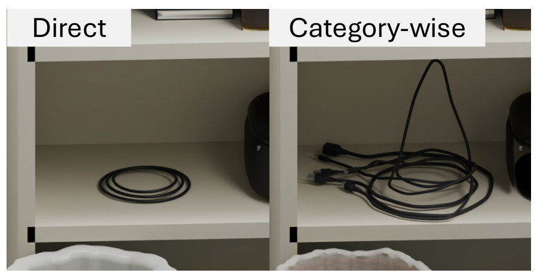
- 说明什么
- 专门的 curve session 做出的线缆更细致、更可信。只有这一张定性图，没有数字。
- 在故事里
- 支撑 §3.3 "三类分开处理"的设计，也是论文里唯一一个关于线缆几何质量的实验。
- 指标
- 没有定量指标，也没有真实线缆的对照几何。
- 怎么评测
- 一个合并的 session 对一个专门的 curve session，各一次。
- 线缆在书架的一层上，下面是垃圾桶，看起来是例子所在办公室的书架（对照 Fig. 6 第三行，我的推断）；论文没说这些线缆有没有进仿真。
Limits
局限和开放问题
论文没有 Limitations 一节；下面前四条是论文自己写明的，其余是我从正文和附录读出来的。
- 参数不是实测（论文自述）：静态 RGB 定不出真实的动态材料参数，所有值都是假设模型下的有效参数（Table 2 标题、§3.3、App A 末尾）；电话线、塑料袋的参数直接取自仿真器示例，没对真物体标定。
- 可变形物体只有演示（论文自述）：没有跨方法的定量比较（§4.2）。
- 消融范围小（论文自述）：几何消融只有一个场景（§4.3）。
- baseline 配置不同（论文自述）：HoloScene* 是改过的配置，ReplicateAnyScene 是重写的（App D）。
- 曲线精度没测：没有电话线或其他线缆和真实几何的误差。唯一的数字 0.422 mm 是重采样折线离重建曲线的偏差，不是离真线的。
- 最细的物体：测过的最细曲线是半径 1.3 mm（直径 2.6 mm）的电话线，只在仿真里；最薄的面是 0.03 mm 的塑料袋。真正进了仿真的曲线只有电话线这一根；Fig. 7 的线缆只有渲染图。
- 遮挡和交叉没有处理方法：论文没讨论被挡住的线段、线和线交叉、线和自己交叉怎么重建；能看到的只有后果：重建线圈有 15,755 对自重叠，要靠重采样才能进 IPC；合并 session 时线缆塌成圆环（Fig. 7）。
- 只有静态场景：输入是静态房间的多视角 RGB，没有物体被移动的视频，也没有真机 rollout；行为测试是预设的、只在仿真里跑。
- 不可复现的细节：curve、surface、volume 三个 session 的指令、所用 skill 的内容、agent 的 reasoning effort、运行时间和 token 开销都没给；项目页写着代码 "Soon"。
- 重复性：同一测试重复两次，线的轨迹差 0.665 mm RMS，局部最多 9.55 mm（App B.4）；E1 没有报告重复次数或方差。
For Agent-centric real-to-sim
对我们有什么用
- r2s-lite 的 repair loop 可以照抄它的归因顺序。它在失败时先查动作、工具、接触位置，再查几何和边界，然后查数值，最后才改材料；Table 6 的 8 次修改只有 2 次动了材料，每次都记下"归因到什么"。我们的 repair loop 已经会挪物体、缩放、改动作，可以把"这次修改归因到哪一层"写进每个 attempt 的记录，并让质量和摩擦这类假设值排在最后才改。但它也没有实测动态，参数同样是"有效值"，补不上我们"质量、摩擦是假设的"和"没有 sim-to-real 证据"这两个缺口。
- 生成 mesh 只当参考，可借给 r2s-lite 的网格和摆放步骤，但它没碰我们的相机问题。它把 SAM3D mesh 当形状参考，agent 重建成 primitives（一把椅子 43 个，轮廓 IoU 81.1–93.7%）；参考 mesh 的摆放用 MASt3R 对应点 + Umeyama，在 ±r 帧里取平均掩码 IoU 最高的那次。这和我们 GPT 设计零件、X-ray 按掩码审查是同一思路，它的"取 IoU 最高的那轮"可以直接借来作摆放的选择规则。但它所有场景都是静态室内扫描，相机由 VGGT-Omega 从 RGB 估、没报相机误差，画面里没有机器人和轨迹；它不能说明怎么修 DROID 约 20 cm 的相机位姿误差，也不涉及物体角色判错。
- 网线这类细线缆：它给了仿真的"目标格式"，没给可靠的感知路径。可以借的：用 centerline + 半径表示、用带扭转的 discrete elastic rod 在 IPC 里仿真；两端几条边固定在刚体上，就像 RJ45 插头（插头这一层是我的推断）；重采样消掉自重叠，满足无穿透输入。不覆盖的：它测过的电话线直径 2.6 mm，比约 5 mm 的网线还细，所以细本身不是问题；但它没给中心线怎么从图像提取、半径怎么估，没测和真线的误差，没处理遮挡和交叉；刚度取自电话示例、没标定；输入只有静态场景，没有在视频里跟踪一根被拖动的线。我们要回放网线被拉动的片段，这些都得另外做（推断）。